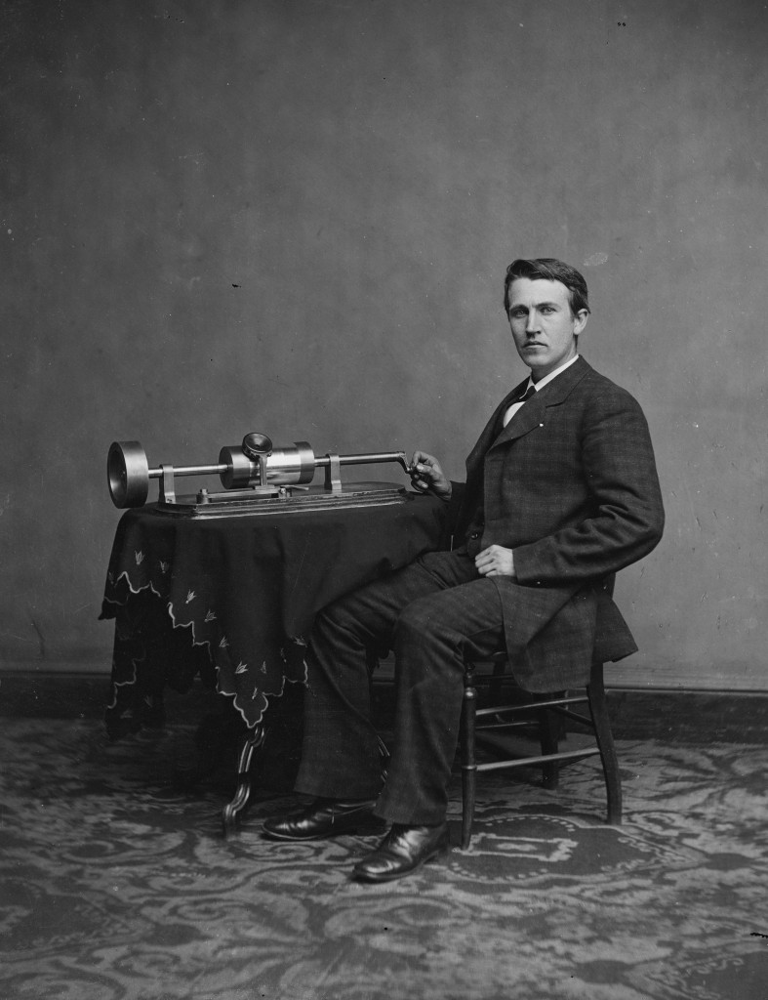
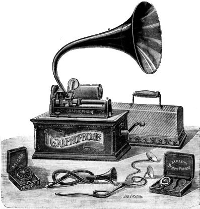

 A monumental descoberta do fonógrafo por Edison em 1877 permitiu que os usuários gravassem e reproduzissem livremente qualquer som, mas sua dependência do papel alumínio como meio de armazenamento de informações foi criticada por ser ineficaz e muito frágil. Por causa disso, Alexander Graham Bell e seus trabalhadores na fábrica de Volta começaram a fazer experiências e chegaram à conclusão de que o cilindro feito de cera poderia suportar o uso repetido, ter um melhor desempenho com gravação e reprodução, ter capacidade para uma reprodução mais longa e ser mais fácil de fabricar do que o design de papel alumínio da Edison. Como Edison patenteou apenas a gravação e reprodução de papel alumínio, Bell não teve problemas em patentear seu design muito superior à base de cera e, a partir desse ponto, seu grafofone tornou-se um padrão em um mundo de processamento de som. Outro fato muito importante que possibilitou o aumento de sua popularidade foi a capacidade de reprodução e gravação automáticas. Enquanto o design da Edison exigia que o usuário girasse manualmente o cilindro, o design de Bell apresentava um mecanismo de corda mecanismo de acionamento que forneceu rotação automatizada.
 Os primeiros dias da produção de grafofones foram marcados com o primeiro lançamento da Volta Graphophone Company de Alexandria, Virgínia em 1881 - Ditafone. Este produto de sucesso logo permitiu a fusão da Volta Graphophone Company com a American Graphophone Company, que poucos anos depois foram renomeadas para Columbia Records. O momento de grande expansão veio com a chegada de Jesse H. Lippincott, que usou $ 1 milhão de herança para comprar a Columbia Records e todas as patentes relacionadas, o que aumentou muito a taxa de produção de grafofones. Entre 1881 e 1888, sua recém-formada North American Phonograph Company não teve muito sucesso por causa de relatos de unidades de fabricação e resistência de estenógrafos que estavam acostumados a gravar a palavra falada por meio do uso de taquigrafia. A aceitação dos grafofones finalmente veio em 1888 com a iniciativa Louis Glass de cilindros de 'entretenimento' de níquel-no-slot. Com o passar dos anos, os grafofones receberam muitas melhorias, desde a qualidade dos diafragmas e da caneta de gravação, até a introdução dos motores elétricos que acionavam a máquina.
O gramofone foi até o momento a maior evolução dos formatos, que veio em 8 de novembro de 1887, da mente do invertor Emile Berliner, um imigrante alemão que trabalhava em Washington DC, que inventou o primeiro gravador de som de sucesso que utilizava discos e o chamou de gramofone. Ao contrário do fonógrafo e do grafofone, o gramofone não gravava em cilindros e, em vez disso, usava discos planos feitos de vidro coberto com cera, goma laca, vinil, cobre, e etc. Durante a gravação, um pequeno sulco era criado com o auxílio de uma agulha na superfície redonda dos discos, essas ranhuras podiam então ser colocadas embaixo do braço do gramofone, onde uma agulha lê e transmite as vibrações sonoras para o alto-falante.
Finalmente, a produção em massa de discos foi possível através do uso do gramofone, que permitia a replicação de vários discos a partir de uma única gravação, para este processo em 1894, Emile Berliner criou a United States Gramophone Company, que recodificava e fabricava centenas de discos a cada ano.